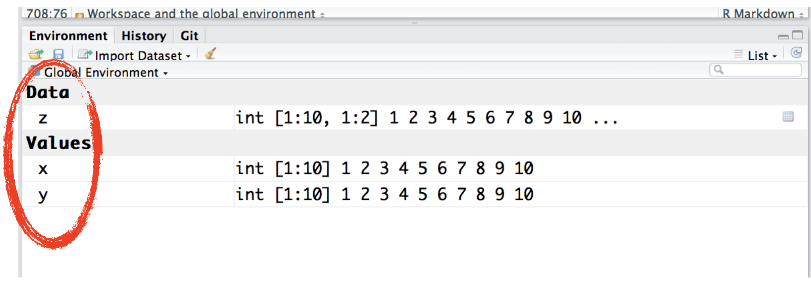
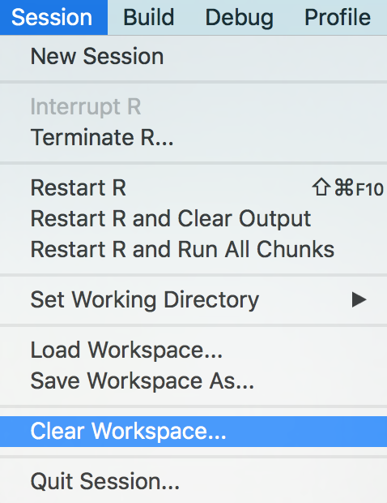
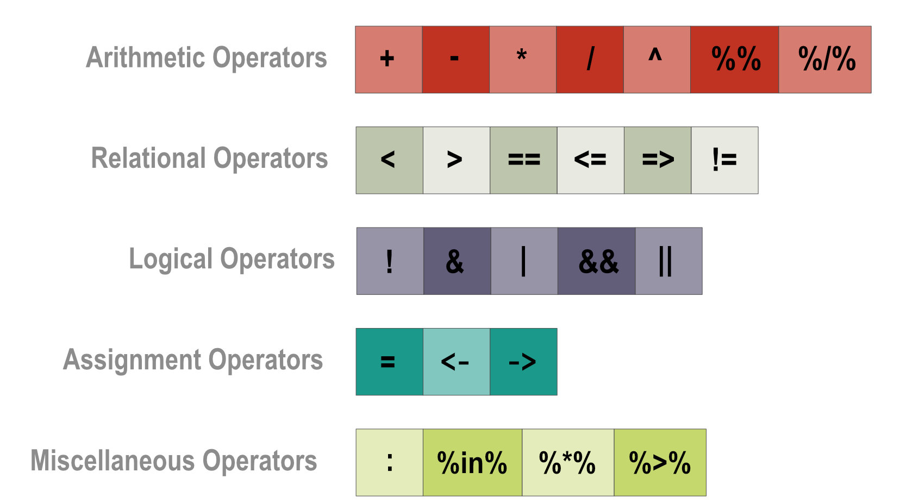
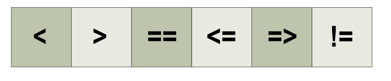
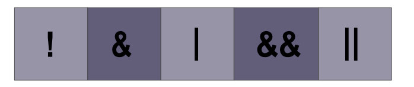
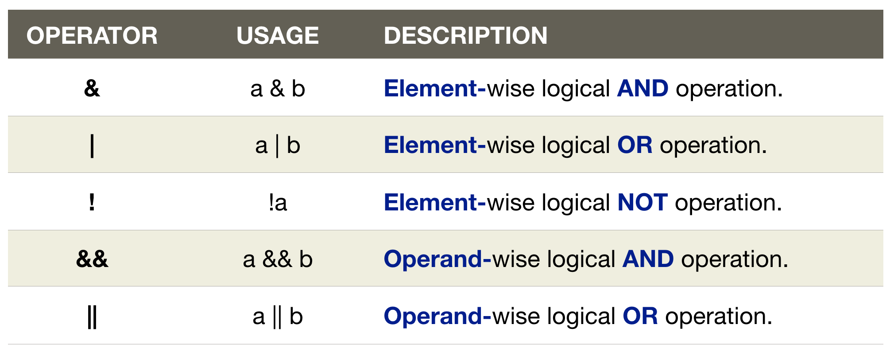
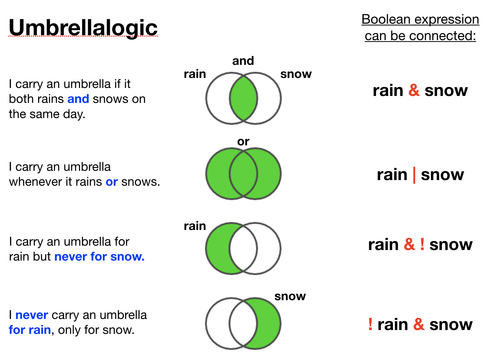
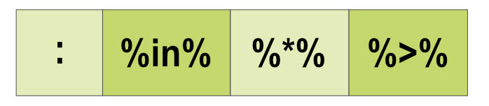
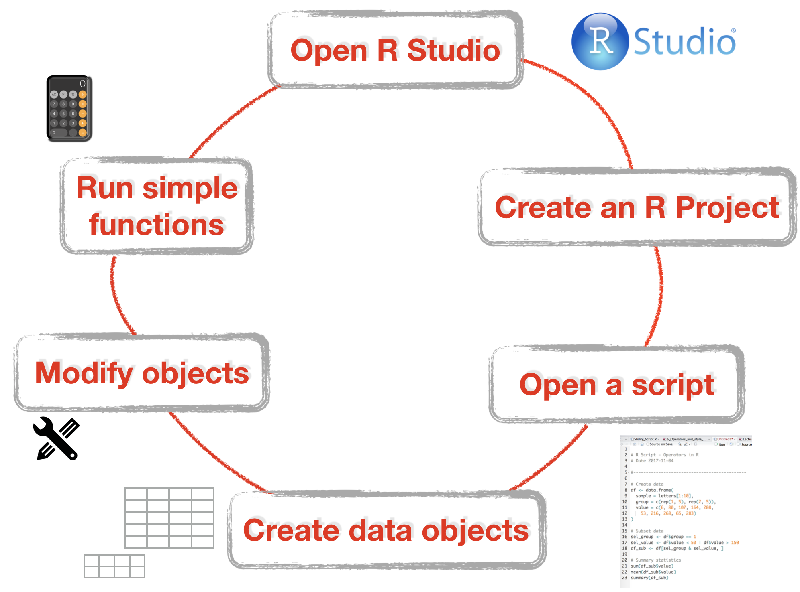

Datenanalyse mit R
3 - Arbeitsbereich und Operatoren
Saskia A. Otto
BSH 11/02 - 13/02 2019
Der Arbeitsplatz oder die globale Umgebung

Wenn Du Objekte in R generierst, erscheinen diese in dem Umgebungsausschnitt unter Global Environment:
x <- 1:10
y <- 1:10
z <- cbind(x,y) # matrix

- Die globale Umgebung ist der erste Ort des Suchverzeichnis von R.
- Jedesmal wenn ein Nutzer eine neue R Session startet wird vom System eine neue Umgebung für Objekte geschaffen, die während der session generiert werden.
- Du kannst die Liste aller Objekte im Arbeitsplatz in der Konsole anzeigen lassen mit
ls():
x <- 1:10
y <- 1:10
z <- cbind(x,y) # matrix
ls()
## [1] "x" "y" "z"
Objekte aus dem Arbeitsplatz löschen mit rm()
x <- 4
x
rm(x)
Objekte aus dem Arbeitsplatz löschen mit rm()
x <- 4
x
rm(x)
Entferne alle Objekte auf einmal: 
Operatoren
Übersicht aller Operatoren

Relationale Operatoren

- Beziehen sich auf die Beziehung zwischen 2 Operanden
- Sechs relationale Operatoren werden in R unterstützt
- Der Output ist immer logisch (TRUE or FALSE)
- Arbeiten Element-weise
| Operator | Verwendung | Beschreibung |
|---|---|---|
| < | a < b | a ist KLEINER als b |
| > | a > b | a ist GRÖSSER als b |
| == | a == b | a ist GLEICH wie b |
| <= | a <= b | a ist KLEINER als oder GLEICH wie b |
| >= | a > = b | a ist GRÖSSER als oderGLEICH wie b |
| != | a!=b | a ist NICHT GLEICH wie b |
Beispiele von relationalen Operatoren
# Beispiele für Zahlen
a <- 10
b <- 5
print(a < b) # gleich
print(a >= b) # grösser oder gleich
print(a != b) # nicht gleich
Beispiele von relationalen Operatoren
# Beispiele für Zahlen
a <- 10
b <- 5
print(a < b) # gleich
## [1] FALSE
print(a >= b) # grösser oder gleich
## [1] TRUE
print(a != b) # nicht gleich
## [1] TRUE
Beispiele von relationalen Operatoren
# Beispiele für Zahlen
a <- 10
b <- 5
print(a < b) # gleich
## [1] FALSE
print(a >= b) # grösser oder gleich
## [1] TRUE
print(a != b) # nicht gleich
## [1] TRUE
# Beispiele für Vektoren
a <- c(7.5, 3, 5)
b <- c(2, 7, 5)
print ( a <= b ) # kleiner oder gleich
print ( a != b ) # nicht gleich
Beispiele von relationalen Operatoren
# Beispiele für Zahlen
a <- 10
b <- 5
print(a < b) # gleich
## [1] FALSE
print(a >= b) # grösser oder gleich
## [1] TRUE
print(a != b) # nicht gleich
## [1] TRUE
# Beispiele für Vektoren
a <- c(7.5, 3, 5)
b <- c(2, 7, 5)
print ( a <= b ) # kleiner oder gleich
## [1] FALSE TRUE TRUE
print ( a != b ) # nicht gleich
## [1] TRUE TRUE FALSE
Logische (boolean) Operatoren

- Funktionieren nur bei den Grunddatentypen (logicisch, numerisch) und bei atomaren Vektoren in R.


Beispiel zu kombinierten boolean Operatoren
x <- 1:5
x[ x < 4 & x >= 2]
## [1] 2 3
Beispiel zu kombinierten boolean Operatoren
x <- 1:5
x[ x < 4 & x >= 2]
## [1] 2 3
| Step | Usage | 1 | 2 | 3 | 4 | 5 |
|---|---|---|---|---|---|---|
| 1 | x < 4 | TRUE | TRUE | TRUE | FALSE | FALSE |
| 2 | ||||||
| 3 |
Beispiel zu kombinierten boolean Operatoren
x <- 1:5
x[ x < 4 & x >= 2]
## [1] 2 3
| Step | Usage | 1 | 2 | 3 | 4 | 5 |
|---|---|---|---|---|---|---|
| 1 | x < 4 | TRUE | TRUE | TRUE | FALSE | FALSE |
| 2 | x >= 2 | FALSE | TRUE | TRUE | TRUE | TRUE |
| 3 |
Beispiele von kombinierten boolean Operatoren
x <- 1:5
x[ x < 4 & x >= 2]
## [1] 2 3
| Step | Usage | 1 | 2 | 3 | 4 | 5 |
|---|---|---|---|---|---|---|
| 1 | x < 4 | TRUE | TRUE | TRUE | FALSE | FALSE |
| 2 | x >= 2 | FALSE | TRUE | TRUE | TRUE | TRUE |
| 3 | x < 4 & x >= 2 | FALSE | TRUE | TRUE | FALSE | FALSE |
Operationen element- vs. operanden-weise
a <- c(TRUE, TRUE, FALSE, FALSE)
b <- c(TRUE, FALSE, TRUE, FALSE)
print(a | b)
## [1] TRUE TRUE TRUE FALSE
print(a || b)
## [1] TRUE
Weitere Operatoren

- Sind mindestens genauso wichtig zum Manipulieren von Daten.
| Operator | Verwendung | Beschreibung |
|---|---|---|
| : | a:b | Generiert eine Serie von Zahlen beginnend mit dem linken und endend mit dem rechten Operanden |
| %in% | a %in% b | Identifiziert ob ein Element (a) Teil der Elemente in Vektor (b) ist |
| %*% | A %*% t(A) | Multipliziert einen Vektor mit seinem transponierten Vektor |
Weitere Operatoren
- sind mindestens genauso wichtig zum manioulieren von Daten.
| Operator | Verwendung | Beschreibung |
|---|---|---|
| : | a:b | Generiert eine Serie von Zahlen beginnend mit dem linken und endend mit dem rechten Operanden |
| %in% | a %in% b | Identifiziert ob ein Element (a) Teil der Elemente in Vektor (b) ist |
| %*% | A %*% t(A) | Multipliziert einen Vektor mit seinem transponierten Vektor. |
Beispiel für %in%
a <- c(25, 27, 76)
b <- 27
print(b %in% a)
## [1] TRUE
print(a %in% b)
## [1] FALSE TRUE FALSE
Aufgaben
Quiz 1: Relationale Operatoren
Was wird folgende Operation zurückgeben (versuche die Antwort ohne R zu finden):
a <- c(6, 80, 107, 164, 208, 53, 216, 268, 65, 283)
a < 60
- NA
- einen numerischen Vektor der 6 und 53 enthält
- TRUE
- FALSE
- einen logischen Vektor mit TRUEs und FALSEs
R checkt für jedes Element in a ob sein Wert kleiner als 60 ist und gibt dann ein TRUE zurück, ansonsten ein FALSE. Da a ein Vektor mit 10 Elementen ist, enthält der zurückgegebene Vektor 10 logische Elemente.
Quiz 2: Relationale Operatoren
Wieviele TRUEs erhältst Du bei folgender Operation (versuche die Antwort ohne R zu finden):
a <- c(16, 47, 207)
b <- c(0, 49, 410)
a <= b
- 1
- 2
- 5
R wendet die Operatoren Element-weise in beiden Vektoren an: 16 <= 0? 47 <= 49? 207 <= 410?
2 Werte in a sind kleiner oder gleich den korrespondieren Werten in b (=TRUE), und zwar 16 und 47.
Quiz 3: Relationale Operatoren
Was geben folgende Operationen zurück:
a <- c(4, 5, 1, 8, 8, 10)
b <- c(0, 0, 3, 6, 7, 9); c <- 3
- a[a < b]
- b[b == c]
- sum(c >= b)
Wenn ein Vektor weniger Elemente enthält als der andere, werden die vorhandenen Elemente für die Element-weisen Vergleiche recycled.
a < bgibt einen logischen Vektor der Länge a bzw. b zurück (=c(FALSE,FALSE,TRUE,FALSE,FALSE,FALSE)), womit dann der Vektor a induziert werden kann. Nur das 3. Element in a (=1) ist kleiner als das korrespondierende Element in b (=3), somit wird nur das 3. Element von a ausgewhlt: 1c wird zuerst recycled (sprich der Wert 3 wird 6mal wiederholt) damit die Element-weisen vergleiche gemacht werden können. Nur das 3. Element in b hat den gleichen Wert wie das 3. Element in c. Somit wird dessen Zahl wiedergegeben (die 3): 3.
c >= bgibt einen Vektor mit 3 TRUEs und 3 FALSEs zurück. Diese werden für die Summenrechnung in 0 und 1 umgewandelt (TRUE =1 und FALSE = 0):3.
Logische Operatoren
An 6 Tagen wurde gemessen ob es sonnig war (sunny = TRUE) und heiß (hot = TRUE). Jetzt wollen wir auf verschiedene Bedingungen testen (versuche auch hier wieder ohne R die Lösung zu finden):
sunny <- c(TRUE, TRUE, TRUE, FALSE, FALSE, FALSE)
hot <- c(FALSE, TRUE, FALSE, TRUE, FALSE, TRUE)
Quiz 4: Logische Operatoren
Was gibt die folgende Operation zurück?
sunny <- c(TRUE, TRUE, TRUE, FALSE, FALSE, FALSE)
hot <- c(FALSE, TRUE, FALSE, TRUE, FALSE, TRUE)
sunny & hot
- einen Vektor der Länge 12 (mit 6 TRUEs und 6 FALSEs)
- einen Vektor der Länge 6 (mit 1 TRUE und 5 FALSEs)
- einen Vektor der Länge 6 (mit 3 TRUEs und 3 FALSEs)
& ist ein Element-weiser UND Operator: ein TRUE wird nur zurück gegeben wenn es sonnig UND heiß war (both TRUE)
Beide Vektoren haben eine Länge von 6 (6Tagen), der output Vektor hat daher auch die Länge 6. Und da es nur an 1 Tag sonnig und heiß war (an Tag 2) enthält der Vektor nur 1 TRUE und sonst FALSE.
Quiz 5: Logische Operatoren
Was gibt die folgende Operation zurück?
sunny <- c(TRUE, TRUE, TRUE, FALSE, FALSE, FALSE)
hot <- c(FALSE, TRUE, FALSE, TRUE, FALSE, TRUE)
sunny | hot
- einen Vektor mit 6 TRUEs
- einen Vektor mit 5 TRUEs und 1 FALSE
- einen Vektor mit 1 TRUE und 5 FALSEs
| ist ein Element-weiser ODER Operator: ein TRUE wird nur zurück gegeben wenn es sonnig ODER heiß war (mind. einer von beiden muss TRUE sein)
An jedem Tag war es sonnig und/oder heiß außer am 5.Tag (daher 1 FALSE und 5 TRUEs)
Quiz 8: Operatoren kombinieren
Welchen Wert erhältst Du bei folgendem Vektor und den 4 Operationen:
a <- c(6, 80, 107, 164, 208, 53, 216, 268, 65, 283)
- a[a > 50 & a < 60]
- a[a > a[5] & a < a[8]]
- sum(a > 250 | a < 100)
- sum(a[a %in% 1:60])
- 53.
- 216.
- 6.
- 59.
Sehr gut!!!! Du hast die R Grundlagen gemeistert, die elementar sind für alles was jetzt kommt.
Du bist nun in der Lage ...

Wie fühlst Du Dich?
Total konfus?

Du kannst in folgendem online tutorial auf der tutorialcart website:https://www.tutorialkart.com/r-tutorial/r-operators/. mehr zu Operatoren nachlesen.
Total gelangweilt?

Keine Sorge! Bald wird Dir nicht mehr langweilig sein.
Absolut zufrieden?
Dann hol Dir einen Kaffee, lehn Dich zurück und genieße den Rest des Tages...!

Bei weiteren Fragen kontaktieren Sie mich unter:
saskia.otto@uni-hamburg.de
http://www.researchgate.net/profile/Saskia_Otto
http://www.github.com/saskiaotto

Diese Arbeit ist lizensiert unter der
Creative Commons Attribution-ShareAlike 4.0 International License
mit Ausnahme externer
Materialien gekennzeichnet durch die source: Angabe.
Bild auf Titel- und Abschlussfolie: Frühjahrsblüte in der Nordsee
USGS/NASA Landsat:
Spring Color in the North Sea, Landsat 8 - OLI, May 7, 2018
(unter CC0 lizenz)